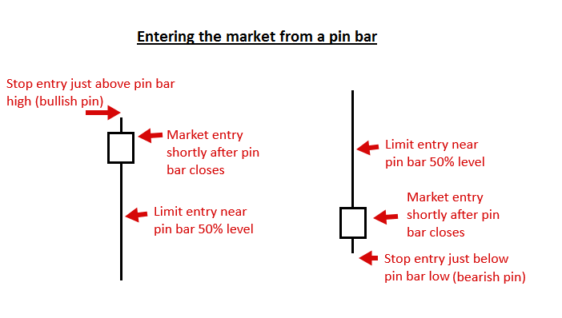
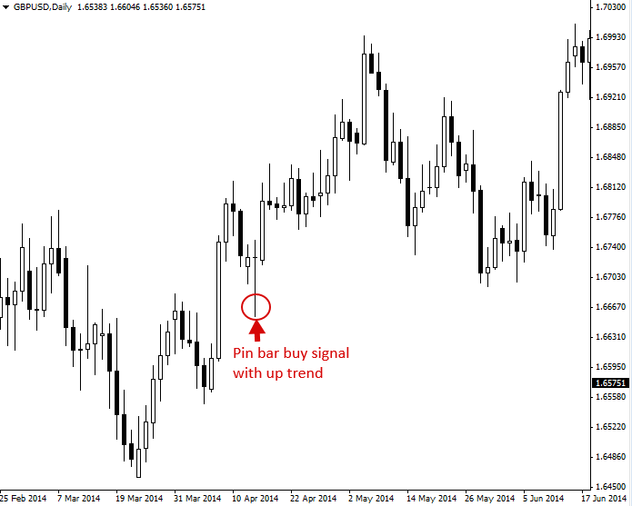
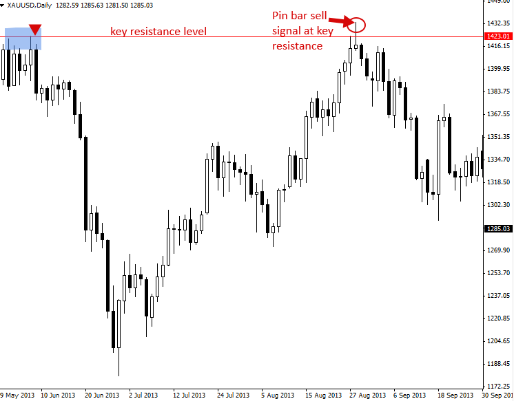
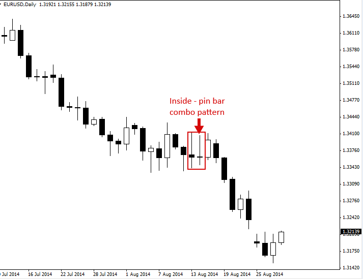
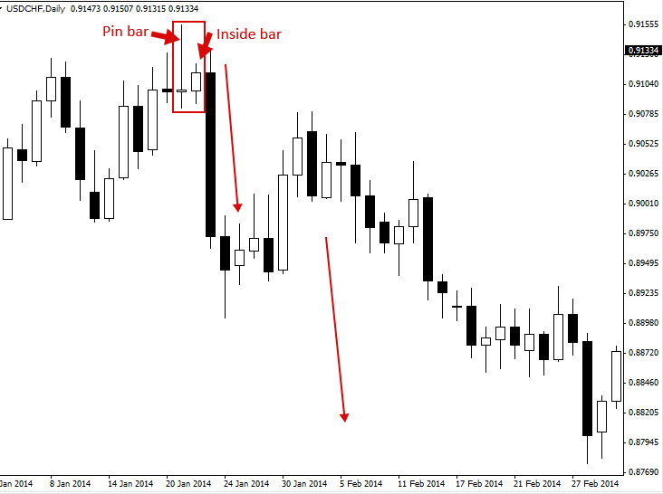
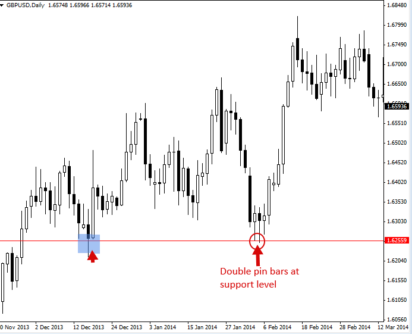

Pin Bar Trading Strategy
핀 바 패턴(반전 또는 연속)
핀 바 패턴은 하나의 가격 막대, 일반적으로 캔들스틱 가격 막대로 구성되며, 이는 급격한 가격 반전과 가격 하락을 나타냅니다. 핀 바 반전 이라고도 불리는 이 패턴은 긴 꼬리로 정의되며, 꼬리는 "그림자" 또는 "심지"라고도 합니다. 핀 바의 시가와 종가 사이의 영역을 "실체"라고 하며, 핀 바는 일반적으로 긴 꼬리에 비해 실체 크기가 작습니다.
핀 바의 꼬리는 기각된 가격 영역을 나타내며, 이는 가격이 꼬리가 가리키는 방향과 반대로 계속 움직일 것임을 의미합니다. 따라서 약세 핀 바 신호는 긴 상단 꼬리를 갖는 것으로, 높은 가격을 기각하며 단기적으로 가격이 하락할 것임을 시사합니다. 강세 핀 바 신호는 긴 하단 꼬리를 갖는 것으로, 낮은 가격을 기각하며 단기적으로 가격이 상승할 것임을 시사합니다.

핀 바로 거래하는 방법
핀바 거래에는 트레이더를 위한 몇 가지 진입 옵션이 있습니다. 첫 번째이자 아마도 가장 인기 있는 옵션은 "시장가"로 핀바 거래를 시작하는 것입니다. 즉, 현재 시장가로 거래를 시작하는 것입니다.
참고: 핀바 패턴은 해당 패턴을 기반으로 시장에 진입하기 전에 반드시 마감되어야 합니다. 핀바 패턴으로 마감되기 전까지는 아직 진정한 핀바가 아닙니다.
핀바 거래 신호에 대한 또 다른 진입 옵션은 핀바의 50% 되돌림 지점에서 진입하는 것입니다. 다시 말해 가격이 전체 핀바의 고점에서 저점까지 범위의 중간 지점, 즉 이미 지정가 진입 주문을 넣었던 "50% 레벨"까지 되돌릴 때까지 기다리는 것입니다.
트레이더는 또한 핀 바의 최저점 바로 아래 또는 최고점 바로 위에 배치된 "온스톱" 항목을 사용하여 핀 바 신호를 입력할 수 있습니다.
다양한 핀바 진입 옵션의 예는 다음과 같습니다.

추세 시장에서의 트레이딩 핀 바 신호
추세를 따라 매매하는 것이 어떤 시장에서든 가장 좋은 방법이라고 할 수 있습니다. 추세가 있는 시장에서 핀바 진입 신호는 매우 높은 진입 확률과 좋은 위험 대비 수익률을 제공할 수 있습니다.
아래 예시에서는 상승 추세 시장에서 형성된 강세 핀바 신호를 확인할 수 있습니다 . 이러한 유형의 핀바는 낮은 가격의 매수 거부(긴 하단 꼬리에 주목)를 나타내므로, 핀바에 반영된 매수 거부가 강세 세력이 다시 가격 상승을 견인할 것이라는 의미이므로 "강세 핀바"라고 불립니다.

주요 차트 수준에서 추세에 맞춰 트레이딩 핀 바
핀 바 카운터를 주요 추세에 따라 또는 반대로 거래할 때는 차트의 주요 지지선이나 저항선에서 거래해야 한다는 것이 널리 받아들여지고 있습니다. 주요 지지선은 카운터 추세 내부 바 패턴과 마찬가지로 핀 바 패턴에 추가적인 '가중치'를 부여합니다. 시장에서 가격이 상승 또는 하락으로 큰 움직임을 시작한 지점이 발견되면 이는 핀 바 반전을 주시해야 할 주요 지점입니다.

핀 바 콤보 패턴
핀 바는 다른 가격 움직임 패턴과 결합하여 거래될 수도 있습니다. 아래 차트에서는 인사이드 핀 바 콤보 패턴을 볼 수 있습니다 . 이 패턴은 인사이드 바가 핀 바 패턴이기도 합니다. 이러한 인사이드 핀 바 신호는 아래와 같이 추세가 있는 시장에서 가장 잘 작동합니다.

아래 차트의 패턴은 인사이드 핀바의 '반대' 패턴으로 볼 수 있습니다. 인사이드 바가 핀바 신호 안에 형성된 패턴입니다. 핀바 패턴의 범위 내에서 인사이드 바가 형성되는 것은 비교적 흔한 현상입니다. 핀바 범위 내에서 형성된 인사이드 바에 이어 큰 돌파가 발생하는 경우가 많습니다. 따라서 핀바 + 인사이드 바 조합 패턴은 아래 차트에서 볼 수 있듯이 매우 강력한 가격 변동 거래 패턴입니다.

더블 핀 바 패턴
시장의 주요 가격대에서 연이은 "더블 핀 바 패턴"을 보는 것은 드문 일이 아닙니다. 이러한 패턴은 일반적인 핀 바처럼 거래되지만, 특정 가격대에서 두 번 연속으로 하락한 것을 반영하기 때문에 트레이더에게 좀 더 확실한 '확인'을 제공합니다.

핀 바 거래 팁
- 초보 트레이더에게는 주요 일간 차트 추세, 즉 '추세에 맞춰' 핀 바를 거래하는 방법을 배우는 것이 가장 쉽습니다. 역추세 핀 바는 조금 더 까다롭고 능숙해지려면 더 많은 시간과 경험이 필요합니다.
- 핀바는 기본적으로 시장의 반전을 보여주기 때문에 단기, 그리고 때로는 장기적인 가격 방향을 예측하는 데 매우 유용한 도구입니다. 핀바는 종종 시장의 주요 고점이나 저점(전환점)을 표시합니다.
- 모든 핀바가 거래 가치가 있는 것은 아닙니다. 가장 좋은 핀바는 추세 내 지지선이나 저항선으로의 되돌림 후 강한 추세가 형성될 때, 또는 차트의 주요 지지선이나 저항선에서 나타납니다.
- 초보자라면 일간 차트 시간대 핀 막대와 4시간 차트 시간대 핀 막대를 주의 깊게 살펴보세요. 이 두 가지가 가장 정확하고 수익성이 높은 것으로 보입니다.
- 핀 바의 긴 꼬리는 가격의 더 큰 반전 및 거부를 나타냅니다. 따라서 긴 꼬리 핀 바는 짧은 꼬리 핀 바보다 가격이 약간 더 높은 확률을 보입니다. 또한 긴 꼬리 핀 바는 짧은 꼬리 핀 바보다 가격이 핀 바의 50% 수준 근처로 되돌림되는 빈도가 더 높습니다. 이는 일반적으로 앞서 설명한 50% 되돌림 진입에 더 적합한 후보임을 의미합니다.
- 핀 바는 어떤 시장에서든 나타납니다. 실제 돈으로 거래하기 전에 데모 계좌에서 핀 바를 식별하고 거래하는 연습을 하세요. 연습만이 완벽을 만듭니다.
https://priceaction.com/price-action-university/strategies/pin-bar/